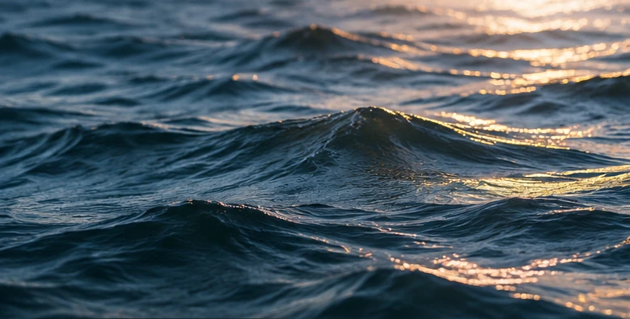

Die Elbe. Jetzt.
Messung:
Aktuelle Messdaten werden geladen …
Illustration: relative Höhe innerhalb der gewählten Zeitspanne. Kein Maßstab für die Flusstiefe.
30 TAGE.
EIN FLUSS IN BEWEGUNG.
Ziehe den Regler oder starte die Zeitreise. Jeder Punkt stammt aus den aufgezeichneten Messwerten der offiziellen API.
Die historische Zeitreihe wird geladen …
Live-Abruf beim Öffnen und danach alle fünf Minuten. Zuletzt abgerufen: —. Pegelwerte in cm über Pegelnullpunkt.

WASSER
VERÄNDERT
UNSEREN BLICK.
Die Elbe prägt das Leben in Hamburg. Für Spaziergänge am Hafen, Fotos am Wasser oder einen Blick auf Ebbe und Flut ist der aktuelle Pegelstand oft wichtiger, als man denkt.
ELBE LIVE macht diese Daten sichtbar – direkt beim Öffnen der Seite und in einer klaren, verständlichen Gestaltung.
Was zeigen die Daten?
Der Pegelstand zeigt, wie hoch das Wasser der Elbe aktuell über dem Pegelnullpunkt steht. Da sich der Wasserstand regelmäßig verändert, sieht die Seite heute anders aus als morgen.